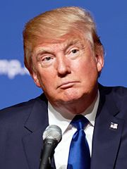

词源2008年11月，美国政治学者 保罗·戈特弗里德 在谈及 H·L·孟肯俱乐部时提到“另类右派”（ "alternative right"）这一说法。 [2009年，美国在线政治文化杂志《 塔基杂志 》刊登了帕特里克·J·福特（ Patrick J. Ford）和杰克·亨特（ Jack Hunter）的两篇文章，其中深入探讨了与主流右派存在差异的另类右派。但一般认为这一术语的广泛使用起源于美国政治作家 理查德·B·斯宾塞 ，他在2008年任《塔基杂志》编辑期间将“在智力上、甚至情感和精神上都与美国保守主义格格不入”的右派群体称为“另类右派”，之后于2010年离职创办 身份主义 政论网站“ 另类右派 ”，日后成为这一政治派别的思想中心。年轻追随者之后将此术语缩写为“ alt-right”。 思想和理念另类右派没有正式的统一思想， 美联社称“无法定义其政治理念”。这一派别组织松散，没有正式的政治组织或政党。对于其是否是一次政治运动也没有定论。支持者一般在网络上活动，多为 4chan和 8chan等匿名网络论坛。其中很多人自称是“开玩笑”或是纯粹为了“惹别人生气”。 [17] 哥伦比亚大学出版的《 哥伦比亚新闻评论 》在2016年称：“由于匿名在线社群模糊身份的特点，没有人能够完全确定另类右派者究竟是哪些人，以及驱动他们这一思想的动机。人们也无法确认其中哪些人是真正的支持者，哪些人是自大的捣乱者，（发表类似言论）只是为了嘲弄别人。”《 纽约客》杂志编辑安德鲁·马兰茨（ Andrew Marantz）认为另类右派更像是一个“标签”，类似“势利眼”或“ 嬉皮士”，“最符合这种标签的人反而不愿意承认”。他还指出，另类右派支持者之间更多是情感共鸣而非政治理念相近。另类右派重要网站 布莱巴特新闻网 称其追随者主要为受过高等教育的白人男性，亦获得白人工人阶级的支持。其撰稿人 米罗·雅诺波鲁斯是另类右派的重要宣传者，他认为另类右派人群涵盖广泛，包含“ 古典自由主义者、对现状不满的左派人士和普通的保守主义者”，以及因唐纳德·特朗普 参选总统而“突然对政治恢复兴趣的年轻参与者”这一主要群体，称其中很多属于“ 千禧世代”。 今日美国在调查中发现千禧世代受访者中34%对另类右派持正面态度，21%持负面态度。 福斯新闻频道则认为其支持者与 唐纳德·特朗普支持者近似，以白人蓝领男性为主，多居住在乡村地区或 红州。《 华盛顿邮报》记者 大卫·魏格尔 在接受 PBS新闻一小时采访时称另类右派支持者中很多是30岁甚至25岁以下对共和党失望的年轻人。

另类右派拥护者在 2016年美国总统选举 中多支持 共和党候选人 唐纳德·特朗普
雅诺波鲁斯和布莱巴特新闻网撰稿人阿勒姆·博哈里（ Allum Bokhari ）认为这一政治思想并非白人优越主义，与支持 种族主义 的 光头党人 完全不同，自称比他们更理性和智慧。博哈里和雅诺波鲁斯指 出，另类右派者反对 左派 文化，认为主流政治思想未能捍卫人文主义、自由主义和普世价值。另类右派称建制派保守主义只关注自由 市场经济 而忽视了西方文化的传承和保护，认为大规模移民以及“一体化”的民族融合会最终破坏西方文化和价值观的纯粹性。因此这一派别提出其首要目标是减少甚至完全阻止 外来移民 ，尤其是来自 穆斯林 国家的移民，支持在 美墨边境 建立边境围墙阻挡墨西哥移民。另类右派认为主流媒体和文化已经由左派控制， 反动左派 的 政治正确 已经影响到 言论自由 。雅诺波鲁斯认为建制派为了政治正确，向公众隐瞒了事实。他称其支持者相信 阴谋论 也是因为这一原因。他还称建制派是“伪善”，称另类右派者希望能打破建制派的禁忌。另类右派认为现有的种族平权政策已经形成对白人的 逆向种族主义 ，反对 黑人命也是命 运动，认为当前的很多“种族歧视”事实上是“受害者思想”，即受害者过度敏感所致。其支持者还认为性别之间存在无法抹杀的差异，相信当前的 女权主义 潮流已经过度。另类右派还 反对全球化 ，反对无意义的对外战争，反对针对 爱国主义 的妖魔化。 [40] 布莱巴特新闻网执行长、另类右派重要人物 斯蒂芬·班农 则将另类右派定义为“年轻的反全球化主义者，非常支持民族主义，极度反建制”。另类右派支持者的共性之一是反对主流建制派政治思想，在 2016年美国总统选举中大多支持 唐纳德·特朗普。尤其赞同其反对 非法移民，反对 多元文化及反对 政治正确的思想。但其内部具体思想存在分歧。 在线杂志《 美国复兴 》创始人、另类右派重要人物 杰拉德·泰勒 自称不认同白人优越主义，认为另类右派的思想基础是“不同种族之间存在基因、道德和智力的差别”，声称白人比黑人更有道德、智力更高，支持在学校中采取 种族隔离制度，同时坚称这并非“白人优越主义”。泰勒认为这一派别与 三K党不同，主要是年轻男性 持不同政见者，意在保护“基督教文化”。他称另类右派坚持美国应当保留自己的独特身份，有权拒绝他人“剥夺”这一身份。另类右派思想创始人之一的理查德·B·斯宾塞也不认同“白人优越主义”的说法，称另类右派运动的核心是维护白人的身份。他认为另类右派希望白人有一片只属于自己的家园，与白人不同的 犹太人应当排除在外，并坚持认为这并非种族主义思想。斯宾塞还认为多元化是以牺牲白人男性的利益为代价的，因此白人男性需要保卫自己的“伟大价值观”，不应关注“‘公正’或‘平等’这类没有意义的东西”。
“ 每日冲锋报 ”创始人安德鲁·安格林，自称另类右派者，公开支持 新纳粹主义 、 白人优越主义 和 种族主义 [47] 。 图中帽子上为特朗普竞选口号“让美国再次伟大”（ "Make America great again" ） 巴农和雅诺波鲁斯都坦承另类右派支持者中确实存在种族主义者和反犹太主义者。雅诺波鲁斯估计其比例大约在2%到5%左右，称这些人无法代表这一运动。而安格林则认为身为 犹太裔 男同性恋者 的雅诺波鲁斯无权占用“另类右派”的名号，称种族主义及反犹太主义思想才是真正的另类右派，鼓励其支持者对雅诺波鲁斯发起“圣十字军”。另类右派媒体、政治博客 The Right Stuff 坦承“如果少了白人民族主义，另类右派什么都不是”，认为这是其思想的重要原则。新纳粹主义网站“ 每日冲锋报 ”亦支持“另类右派”，自称为“全球访问量最大的另类右派网站”。其创始人安德鲁·安格林（ Andrew Anglin）认为真正的另类右派者应当支持种族主义和反犹太主义，保卫白人的血统和西方基督教文明。他认为另类右派支持者应当“消灭犹太人的暴政”，称如果特朗普因选举受到操纵而在2016年大选中落败，将发动“起义”并将鼓励一场“公开的种族战争”。安格林还称，另类右派运动的目的就是为了在年轻一代中重塑 白人民族主义 的形象。 主流意见主流观点多认为另类右派与 种族主义关联密切，认为其思想中核心为 白人民族主义 和 白人优越主义。《 卫报》政治记者吉尔斯·弗雷泽（ Giles Fraser）称另类右派是古老的种族主义在现代社会的新存在形式。监察 极右翼组织的团体 One People's Project 创始人达瑞尔·拉蒙特·詹金斯（ Daryle Lamont Jenkins）称另类右派不过是白人优越主义者或白人民族主义者“为淡化自己的种族主义色彩而采用的词语”。新闻网站 Vocativ 更是认为，另类右派只包含两类人：一类是希望自己的观点得到重视，而不承认自己是种族主义者的“白人民族主义者”；另一类则是毫不避讳自己白人优越主义思想的种族主义者。 CNN、 路透社、《 纽约时报》、《 卫报》、《 洛杉矶时报》等主流媒体在不同报道中指出这一派别包含的政治理念包括： 反犹太主义、 族群民族主义 、 右翼民粹主义、 排外主义、 恐伊斯兰情绪、 反女权主义、 恐同思想以及“ 黑暗启蒙运动 ”（或称“ 新反动主义运动 ”）等。除此之外，新闻和政见网站 每日传讯 指出 无政府资本主义、 美国民族主义 、新君主主义、 男权运动和 身份主义运动 等思想支持者中亦有人自称为另类右派运动的一部分。安德鲁·马兰茨则认为除此之外，其拥护者中还包括“ 阴谋论者以及好战的 虚无主义者”。英国新闻杂志《 本周 》分析称另类右派者是一个奇特的群体，其中包括“老派 新纳粹主义者、 阴谋论者、 反全球化人士和年轻的右派网络喷子”，都认为“多元文化和政治正确对白人男性的身份造成威胁”。《卫报》评论人林迪·韦斯特（ Lindy West）也直指另类右派的本质是“一群不加掩饰的新纳粹主义者”。 全国公共广播电台的妮可·海默（ Nicole Hemmer）称另类右派者认为“政治正确”是“对他们自由的最大威胁”。 对于另类右派的反移民思想，美国记者 凯茜·扬 在《 新闻日报 》专栏中指出，另类右派理想中的美国并非如《 独立宣言》中的平等、自由，而应该如《 1790年归化法案 》中“仅限品行良好的白人才可归化为美国公民”。《 经济学人》分析注意到另类右派与欧洲的 身份主义运动 相似，都对外来移民持强烈的反对态度，并主张对 欧洲移民危机采取强硬措施。在线政治文化杂志《 联邦党人 》撰稿人罗伯特·特拉辛斯基（ Robert Tracinski）认为另类右派思想反对 种族通婚，鼓吹 集体主义和 部落主义 ，不符合右派的理念。他还认为这一派别虽然号称保卫西方文明，但已经破坏了西方文明中的普世价值。 起源和发展思想起源布莱巴特新闻网 及其撰稿人 米罗·雅诺波鲁斯 在另类右派思想推广的过程中扮演了重要角色。雅诺波鲁斯自称并非并非另类右派人士，但积极宣传这一思想，被视作另类右派的“发言人”。2016年3月，雅诺波鲁斯和网站另一位撰稿人阿勒姆·博哈里合作了一篇文章，向主流保守主义介绍另类右派思想。 CNN 认为这篇文章类似一篇“政治宣言”。在这篇文章中，二人提出另类右派衍生自美国 老右派 和欧洲多个 新右派 运动。文章称另类右派受到 奥斯瓦尔德·斯宾格勒 、 H·L·孟肯 、 尤利乌斯·埃佛拉 等人理论的启发， 旧保守主义者 帕特·布坎南 和 萨缪尔·T·弗朗西斯 也对其有一定影响。2007年至2008年间， 布什政府的支持率下跌到30%以下，美国有包括众多年轻人在内的大量人士对共和党及保守派深感失望，认为他们未能阻挡多元文化、全球化和外来移民。2008年，政治作家 理查德·B·斯宾塞 任《塔基杂志》编辑期间将“在智力上、甚至情感和精神上都与美国保守主义格格不入”的右派群体称为“另类右派”（ alternative right），共和党人 罗恩·保罗在 2008年总统选举中的竞选活动也成为另类右派的萌芽。之后斯宾塞在2010年创办“ 另类右派 ”网站，开始刊登其对种族问题的见解。2011年起，斯宾塞开始任另类右派 智库 国家政策研究所 主席，其创办的“另类右派”网站也成为这一思想的传播中心。随后年轻右翼群体逐渐加入这一派别，将其名称改为更符合互联网潮流的简单形式“ alt-right”，并开始利用 网络爆红和 表情包等贴近年轻人的方式表达自己的观点，将这一思想推广至 4chan、 8chan等其他网络论坛。这一群体早期人数甚少，但在社交媒体上极度活跃，热衷于在网络匿名论坛中宣传自己的政治思想。 美国经济学家、 经济教育基金会 成员 杰弗里·塔克在研究中称另类右派“沿袭自漫长而无趣的思想传统，从 弗里德里希·黑格尔，到 托马斯·卡莱尔，到 奥斯瓦尔德·斯宾格勒，到 麦迪逊·格兰特 ，到 奥特马尔·施潘 ，到 乔瓦尼·秦梯利，再到特朗普的演讲”。他称另类右派拥护者无法接受每个人享有平等权利，幻想“回到想象中精英统治、草民服从的黄金时代”，相信“身份就是一切，失去身份是对自己犯下的最严重罪行”。《 新共和》编辑基特·希尔（ Jeet Heer）也认为另类右派思想源自旧保守主义，尤其是其限制移民的思想和公开支持 民族主义外交政策。《卫报》分析指出其思想可追溯至新右派的族群民族主义。政治新闻记者马修·谢菲尔德（ Matthew Sheffield）在《 华盛顿邮报》的评论中指出，另类右派的思想受到 无政府资本主义和 旧自由意志主义 理论家 穆瑞·罗斯巴德的诸多影响。谢菲尔德认为尤其是罗斯巴德关于种族和民主的理论对另类右派影响深远。他还认为罗恩·保罗在2008年美国大选中提出的旧自由意志主义思想也影响了另类右派思想的产生。杰弗里·塔克则认为虽然诸多另类右派人士自称其思想源自 自由意志主义，但二者存在本质差别。他认为另类右派与自由意志主义的截然相反之处在于，前者强调群体身份和集体行为，而后者更关注个体的选择和自由。新闻媒体《 The Trace 》撰稿人亚历克斯·雅布隆（ Alex Yablon）认为另类右派思想和《 南方公园》制作人 马特·斯通及其“ 南方公园共和党 ”的思想也有渊源。他认为另类右派对主流政治心怀不满，而斯通对右派 保守主义和左派 自由主义都深恶痛绝，两者观点相似。但他指出斯通一派多为独立人士，而另类右派思想则趋向 极右翼。 [76] 2016年总统选举2008年 贝拉克·奥巴马任职美国总统后，另类右派思想逐渐发展壮大。 2016年美国总统选举中， 共和党候选人 唐纳德·特朗普自初选开始便提出诸多与主流意见相悖的政见，包括反对非法移民、提倡在 美墨边境建围墙、反自由贸易、反政治正确及反对伊斯兰恐怖主义等。这些观点都获得了另类右派的支持。理查德·斯宾塞认为特朗普竞选活动的核心与另类右派是共通的，都是维护白人的身份。另类右派中的一部分人也认为他的言论能帮助种族主义和反犹太主义思想进入主流政治界。特朗普的竞选活动推动了这一思想的发展，雅诺波鲁斯和斯宾塞都认为其支持者中有很多是因受到特朗普的影响才对政治产生兴趣。同时其拥护者也积极在网络上替特朗普宣传，甚至视他为“先知”或“神皇帝”（ "God Emperor"）。但特朗普和另类右派者都不认为他属于这一思想派别。 在2016年大选的党内初选中，一些另类右派者在 民主党初选中曾支持 民主社会主义者 伯尼·桑德斯，以击败 希拉里·克林顿，但特朗普胜出共和党的初选之后，他很快得到了大多数另类右派拥护者的坚定支持。2016年8月，特朗普任命斯蒂芬·班农为竞选团队主管；随后，其对手民主党候选人 希拉里·克林顿公开指责特朗普与另类右派关系密切，并称另类右派为“右翼中最充满仇恨的极端”。另类右派自此开始获得主流公众的关注。同年9月，理查德·斯宾塞、杰拉德·泰勒以及另一位另类右派领导人物 彼得·布里姆罗 在 华盛顿特区召开记者会，自称“出柜大会”，向公众和媒体介绍其主要思想。 [81]特朗普在11月的大选中获胜，之后又任命 斯蒂芬·班农为白宫首席战略顾问。另类右派人士对特朗普的胜选和任命反响热烈，认为这意味其思想已经进入美国主流政界。 2016年11月19日，另类右派在华盛顿特区的一次集会中行 纳粹礼祝贺特朗普当选，斯宾塞在会上说出：“特朗普万岁，我们的民族万岁，胜利万岁” [注 1] 。但特朗普随后对其提出谴责，表示和这一派别没有关联，不愿鼓励其行为，其团队也声明“谴责种族主义”。新闻评论杂志《 国家评论》认为另类右派思想在特朗普胜选之后得到进一步推广，甚至可能从边缘日趋主流。 [85]但新闻杂志网站《 连线》对另类右派前景并不看好，认为历史上极端思想的兴衰十分常见，另类右派思想和其他极端思想一样，也会很快衰落。 相关文化另类右派人士热衷利用 网络爆红、 表情包等网络文化宣传政治思想，多活跃于 4chan、 8chan等网络匿名论坛中。 布莱巴特新闻网 也是另类右派人士的集中地。这一群体创造了诸多新词，其中最常用的词汇之一是“ cuckservative”（“绿帽保守主义”），即“ cuckold”（ 绿帽子）和“ conservative”（ 保守主义）的合成词，表示对共和党和主流保守主义的侮辱。其他常用的俚语还包括由“ liberal”（ 自由主义）和“ retard”（弱智，对 智力障碍人士的歧视称谓）合成的“ libtard”（“自由派弱智”，针对“自由派”的侮辱字词），以及和“ feminist”（ 女权主义者）相对的“ masculinist”（ 男权主义者，含褒义）等词汇。极右翼另类右派政治博客 The Right Stuff还创造了在网络上标注犹太人的“回声”标识。此种标识以 三重括号 将犹太裔人士的姓名注释起来（例如“(((人名)))”），对其进行攻击或骚扰，是另类右派群体最早认同的标识之一。之后 反诽谤联盟正式认定三重括号标记犹太人的标识为“ 仇恨标志”。 另类右派在网络上的象征之一是漫画形象青蛙 Pepe。这一群体在网络上大量使用此形象，甚至视其为“吉祥物”。其支持者热衷于在此形象基础上进行二次创作，加入了特朗普的头像、 纳粹军装、 纳粹标志等元素，用于宣传政治思想。希拉里·克林顿在2016年的竞选活动中指责另类右派后，这一形象也获得主要媒体的关注。主流媒体也称其为“纳粹的青蛙化身”。反诽谤联盟随后也将这一形象认定为仇恨标志。 |